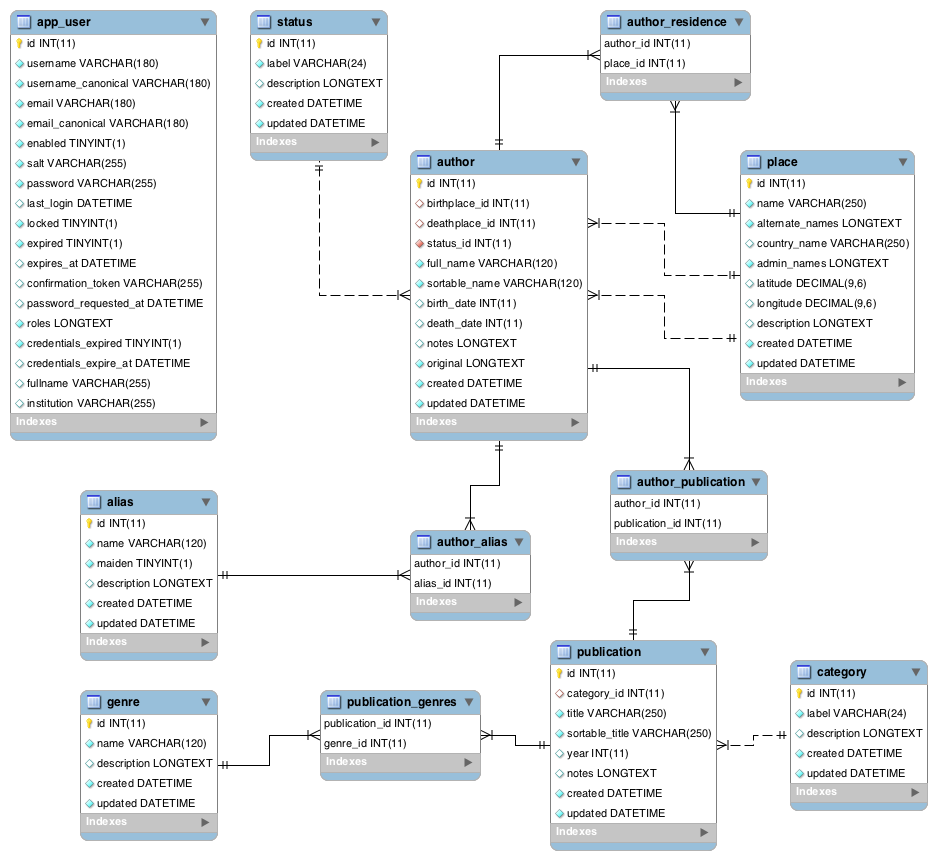

Database¶
The CEWW database backend is MySQL/MariaDB. The front-end interacts with it via Doctrine. Porting to other database platforms should be fairly easy, although some care will be needed for the full text search. [1]
Author¶
Authors are the central entites in CEWW. The authors table has columns for full name, sortable name, birth year, death year, birth place, death place, and status.
Sortable name is never shown in the public interface. All lists are sorted by sortable name. Birth place and death place are foreign keys to the Place table.
The authors table has several many-to-many relationships with other tables.
Aliases is a list of aliases or psuednyms or pen names. A one-to-many relationship wouldn’t work here, because several authors published under the same pen name, and some authors have multiple pen names.
Residences is a list of places where the author is known to have lived.
Publications is a list of publications the author contributed to.
Doctrine implements each of these many-to-many relationships with an additional join table (author_alias, author_residence, author_publication)
Alias¶
An alias is a psuedonym or pen name for one or more authors. Aliases include maiden names.
Publication¶
Publications are any printed work. Periodicals, serials, anthologies, and books are all included and more categories of publications may be added. The table contains columns for title, sortable title, year, category, genres, and notes. Sortable title is never shown in the public interface. Category is a many-to-one relationship iwth the category table. Genres is a many-to-many relationship with the genre table. Notes are any information editors wish to share with one another about a publication.
Place¶
A place is a city, usually in Canada. The database tracks where an author was born, lived, or died. The table contains columns for the place name, alternate names, country name, administrative names (province or state), latitude, and longitude. There is also a column for description, which may be unusued.
Category¶
Category is a lookup table for publication, and describes the type of the publication (eg. book, serial, periodical, anthology).
Genre¶
Genres describe the content of a publication (eg. poetry, fiction).
Status¶
Author information may be saved as a draft or published. The status table has columns for the status label, public, and description. Authors with a status where public is true will be shown in the public interface.
Footnotes
| [1] | Doctrine doesn’t have support for MySQL’s full text search, so we wrote a doctrine extension to add support. Porting to another database may require a similar extension. |